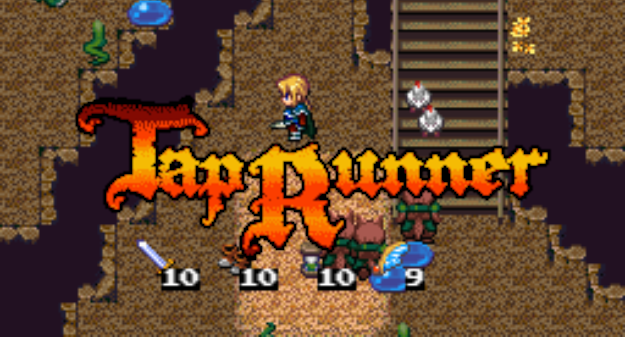

タップするたびに方向転換する主人公を操って、 画面上部のゴールを目指します。
宝箱に入っているアイテムを取るとパワーアップします。 穴に落ちるか時間切れになるとゲームオーバーです。
20面クリアで1周目のエンディング、 40面クリアで真のエンディングになります。
なお、スワイプ操作はありません。
Tap Runner はJavaScriptで開発しています。 PCやスマートフォンのブラウザで遊べます。
TODO: PWA対応していますので、ホームに追加してオフラインで遊ぶこともできます。